Start Up¶
General Safety Instructions¶
Note
Before proceeding with the start-up, please follow the instructions set forth in the safety section.
Hazard: Danger to life from handling toxic or highly reactive substances

When handling toxic or highly reactive substances, the end user should observe the following rules:
► Workstations should be properly equipped with, for example, additional ventilation, gloves, goggles, protective clothing, and protective headgear.
► Personal protective equipment specified in the manufacturer’s safety datasheet should be worn.
► Storage containers/ambient conditions specified in the manufacturer’s safety datasheet and other regulations should be observed.
► Contact with other substances can be lethal and should be avoided. The manufacturer's instructions should be followed and implemented.
► Vapors of toxic or highly reactive substances should not be inhaled as this can be lethal.
► Every direct skin contact with a toxic or highly reactive medium should be avoided as it can be lethal.
► Oral intake of any toxic medium should be avoided as it can be lethal.
► Inappropriate protective equipment can lead to skin contact or ingestion of a toxic medium, and therefore it should be avoided. Otherwise, it can be lethal.
► In case of skin contact or ingestion of any toxic substance despite safety precautions taken, a doctor’s consultation should immediately be sought.
► Improper disposal can be lethal. All requirements and regulations regarding the disposal of a medium, as well as objects and fluids that have come into contact with it, should be observed.
Warning: Risk of electrical injury

Direct contact with electronic components should be avoided when appropriate safety precautions are not taken.
► Start-ups may only be performed in safe condition and by authorized personnel.
► Malfunctions should only be fixed by maintenance and service personnel.
Caution: Risk of crushing due to axial movement

► Maintenance and repair works may only be performed by qualified maintenance and service personnel.
► Hands should be kept away during axial movement.
Draft
Preparation¶
Before proceeding with the start-up, you should complete the following items:
► Read the Safety section of the user manual.
► Follow local legislation regarding occupational safety and accident prevention:
-
Appropriate work clothing: gloves, goggles/protective gown.
-
Risk assessment of the media to be used.
► Provide a workstation with the following specifications:
-
Clean and flat work surface
-
Workstation dimensions (L x W x H): approx. 750 mm x 600 mm x 500 mm
► Provide a network enabled PC or laptop.
► Ensure the supply of compressed air with the following specifications:
-
Proportional pressure regulator
-
Supply of pressure to the unit, 1.7 – 2 bar at 10 l/min
-
Pressure reduction, with supplied pressure > 2 bar.
► The electrical supply should meet the following requirements:
- 110 - 240 VAC 50/60 Hz (nominally)
► laboratory balance with a reading accuracy of at least 0.1 mg (0.0001 g) should be provided for calibration purposes.
Unpacking¶
Delivered in two separate packages, the CERTUS RIVO starter kit consists of the following components (which vary depending on which ones have been selected):
| Package A (655 x 535 x 288 mm): |
|---|
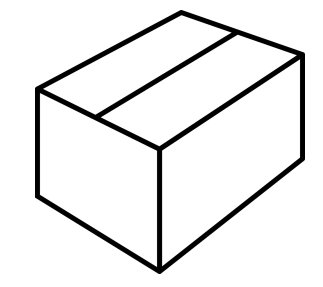 |
| A4 page: axis lock warning label |
| Binder: CERTUS RIVO user manual |
| Box (310 x 220 x 83 mm): base unit, including the well plate holder |
| Box (161 x 114 x 44 mm): waste tray |
| Box (185 x 180 x 50 mm): patch cable; various articles |
| Box (181 x 148 x 71 mm): micro valves; power cord; compressed air manifold (Option) |
| Box (134 x 100 x 71 mm): dispensing head |
| Box (310 x 220 x 83 mm): accessories kit |
| Package B (350x 250 x 350 mm): |
|---|
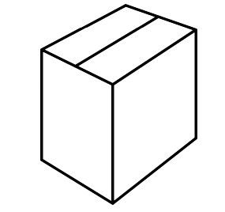 |
| Box (310 x 215 x 70 mm): Syringe kit |
| Box (310 x 215 x 100 mm): Bottle kit |
| Box (310 x 220 x 150 mm): bottle holder |
Note
All the packaging should be kept for return or storage.
► Carefully unpack the delivered package(s).
Check all the components for completeness and integrity using the ordering documentation and the table above. Should they be incomplete or damaged, please contact your distributor.
► Unused components and accessories should be stored in their original packaging.
Warranty¶
Unless otherwise agreed with the manufacturer, the warranty period is 12 months from the date of delivery (according to the GTC of your distributor).
CERTUS RIVO – Start-Up¶
During the start-up, CERTUS RIVO is prepared for operation.
It is the time when all necessary measures are taken to ensure the seamless functioning of CERTUS CONTROL.
Note
CERTUS RIVO may only be started up by qualified service and maintenance personnel.
Draft
Inserting the Waste Tray¶
► Put the waste tray into the slot and push it forward into the pin.
► Use some force to move the waste tray until the stop.
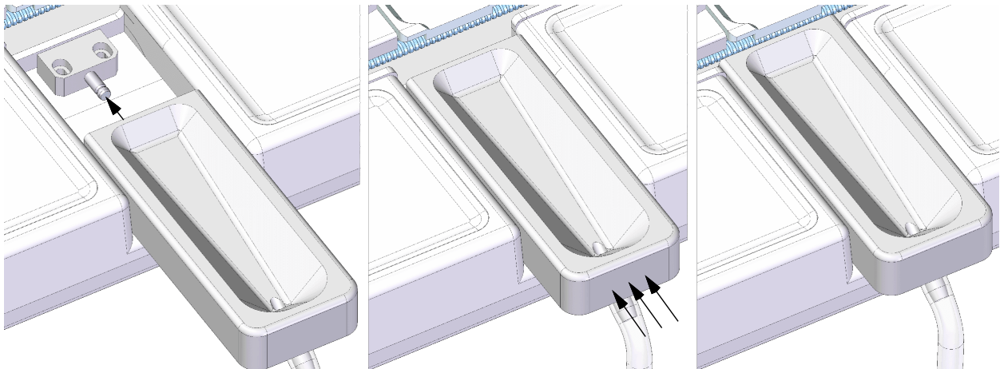
Warning: Risk of fluid spillage

The proper installation and position of the tube should be carefully checked. Otherwise, malfunctions, including health consequences, may occur.
Connecting the Unit¶
► Connect all required tubes and cables to the base unit.
✓ Connect the compressed air tubes to IN (Ø 6 mm) and OUT (Ø 4 mm).
✓ The cables are connected to the main switch and the Ethernet cable.
Note
Before connecting the power cord, please check that the main switch is set to OFF (see the picture).
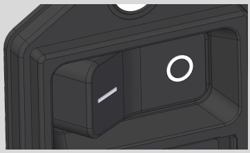
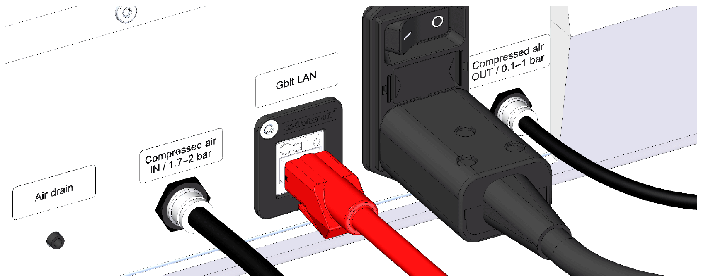
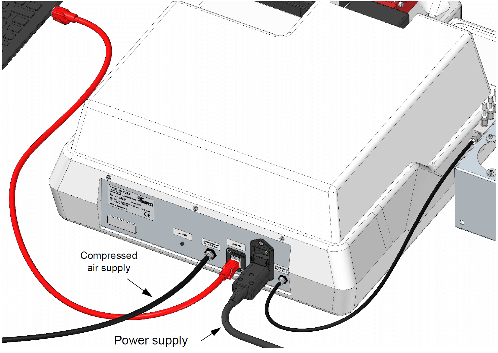
Putting on the Dispensing Head¶
► Put on the dispensing head onto the Y axis and fasten it with the screw (Torx, T20).
Note: Malfunctioning due to a damaged component

The use of force can twist the pins of the D-SUB plug, and thus compromise contact with the control unit.
► Carefully install the dispensing head onto the Y axis without using force.
► Avoid contact with the pins.
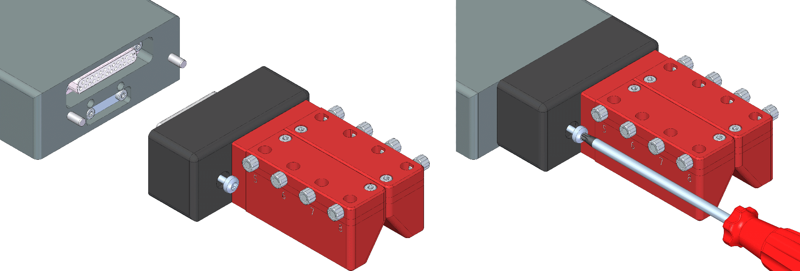
Installation of the Micro Valves¶
The micro valves of the relevant channel should be tightened hand-tight before connecting the channel to a syringe and bottle kit.
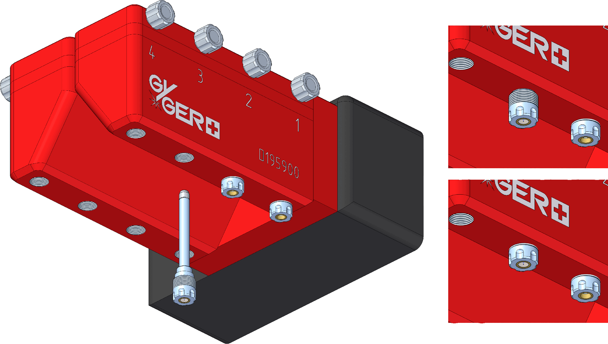
Note
The micro valve cannot be electronically recognized based on the dispensing head. Therefore, before tightening, record the serial number and the type of micro valve together with the relevant channel to avoid the need to check it later on.
Preparing the Bottle Kit¶
Note
Ordered bottle kits are delivered fully assembled. (Steps 1 through 6 can be omitted.)
► Read the following sections before installing a bottle kit:
Warning:Risk of fluid spillage

Open outlets at the bottle cap can leak some fluid, which may have health consequences.
► Unused outlets should absolutely be provided with blind screws.
► Make sure that all the plugs and tubes are properly installed.
► Pour fluid into the container only after the tubes are correctly installed and connected to CERTUS RIVO.
Step 1: Cutting tubes to length¶
Cut the tube (inner Ø=1.6 mm) to desired length using a cutting tool:
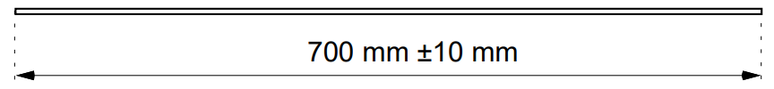
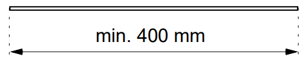
Note
Observe the length of the fluid tube (which affects dispensing accuracy). The compressed air tube can be cut to any length (at least 400 mm).
Note:Malfunctioning due to tube contamination

Every dirt/leftover in the tube can cause obstruction during dispensing, and should be avoided.
► Keeping clean during work (or, as the case may be, cleaning the tubes before their use)
Step 2: Placing the clamping sleeve¶
The clamping sleeve should be pressed over the tube in the following orientation/sequence:
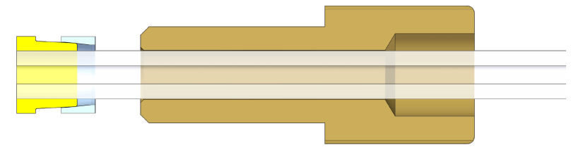
Warning: Malfunctioning due to and risk of fluid spillage

If the clamping sleeve is oriented incorrectly, no tube clamping can be ensured. This will prevent pressure from building up in the container. This may lead to malfunctioning or fluid spillage.
► Before tightening, make sure that the clamping sleeve is properly placed.
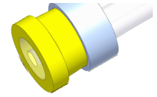 |
The end of the compressed air tube should be flush with the clamping sleeve. |
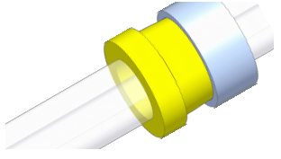 |
The distance between the fluid tube end and the bottle bottom should be approx. 5 mm. See Bottle Kit – Operational Chart. |
Note
The tube is attached by means of the clamp sleeve and cannot be moved anymore only when the pressure screw is screwed into the bottle cap. Therefore, the 5 mm large distance between the fluid tube and the bottle bottom should be set before the pressure screw is securely into place.
Step 3: Inserting the inlet adapter¶
All the fluid tubes extending from the bottle hood are provided with inlet adapters for connection to the micro valve at the dispensing head.
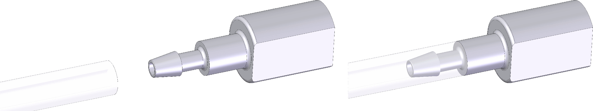
Step 4: Driving tubes into bottle caps¶
All the tubes can only be driven into the bottle cap using the pressure screw.
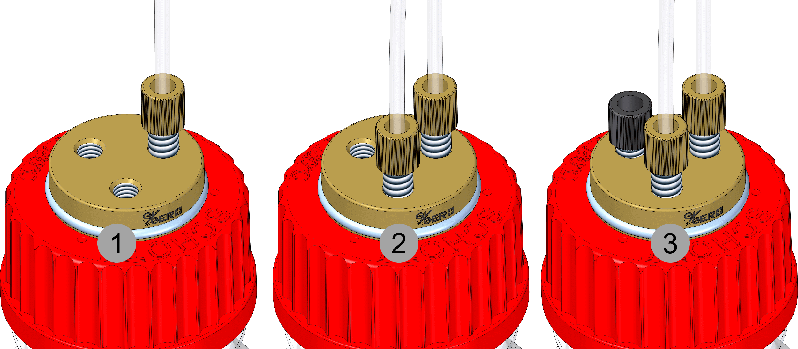
-
Tighten the compressed air tube hand-tight using the pressure screw.
-
Tighten the fluid tubes hand-tight using the pressure screw.
(Insert the tube through the opening in the container)
-
Tighten all unused outlets hand-tight using blind screws.
Warning: Malfunctioning due to open outlets

If open outlets are not plugged with blind screws, no pressure build-up in the container is possible.
► Make sure that all the pressure screws are tightened hand-tight and all open outlets are plugged with blind screws.
Step 5: Installing a suction filter (option)¶
Place a suction filter at the end of the fluid tube.
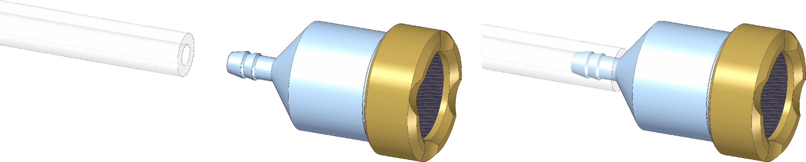
Note
If a suction filter is used, the 5 mm distance from the bottle bottom does not have to be taken into account. (It may touch the bottle bottom.)
Step 6: Capping the lab bottle¶
The bottle cap can be screwed onto the container until it reaches the stop.
Preparing the Syringe Kit¶
Note
Ordered syringe kits are delivered fully assembled. (Steps 1 through 5 can be omitted.)
► Read the following sections before installing the syringe kit:
► Syringe Kit – Operational Chart.
Warning: Risk of fluid spillage

The inlet adapter of the syringe kit can leak some fluid, which may have health consequences.
► Fill the syringe with fluid only after the tubes are correctly installed and connected to CERTUS RIVO.
Step 1: Cutting the compressed air tube to length¶
Cut the tube (inner Ø=1.6 mm) to desired length using a cutting tool:
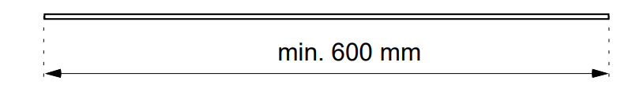
Note
The compressed air tube can be cut to any length (at least 600 mm).
Note: Malfunctioning due to tube contamination

Every dirt/leftover in the tube can cause obstruction during dispensing, and should be avoided.
► Keeping clean during work (or, as the case may be, cleaning the tubes before their use.)
Step 2: Placing the clamping sleeve¶
The clamping sleeve should be pressed over the tube in the following orientation/sequence:
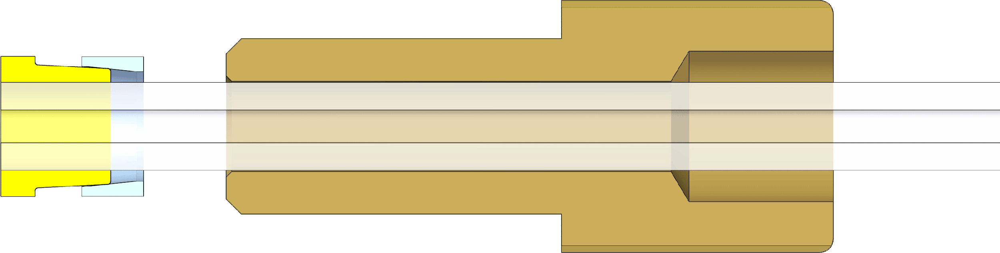
Warning:Malfunctioning due to and risk of fluid spillage

If the clamping sleeve is oriented incorrectly, no tube clamping can be ensured. This will prevent pressure from building up in the container. This may lead to malfunctioning or fluid spillage.
► Before tightening, make sure that the clamping sleeve is properly placed.
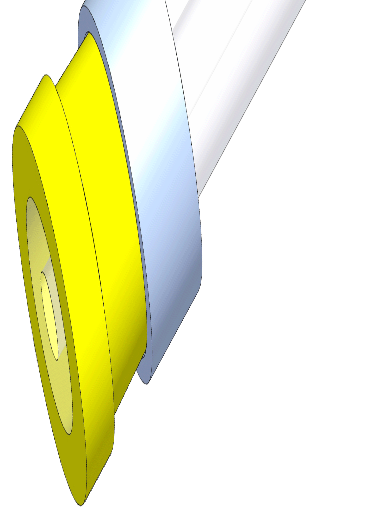 |
The end ofthe compressed air tube should be flush with the clamping sleeve. |
Note
The tube becomes retained by the clamping sleeve only after the pressure screw is driven into the bottle cap and cannot be moved anymore.
Step 3: Connecting the tube to the adapter¶
Insert the compressed air tube into the threaded hole of the adapter head and tighten it hand-tight using the pressure screw.
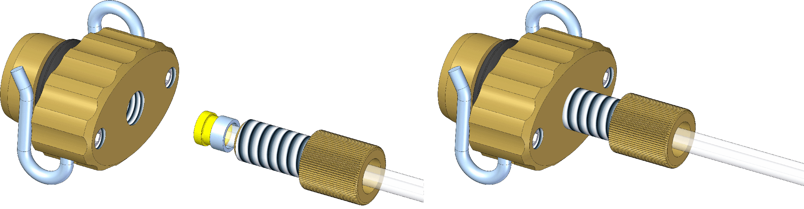
Note
Check the tube by pulling at it.
Step 4: Screwing the inlet adapter into the syringe¶
Fasten the inlet adapter hand-tight at the end of the syringe.
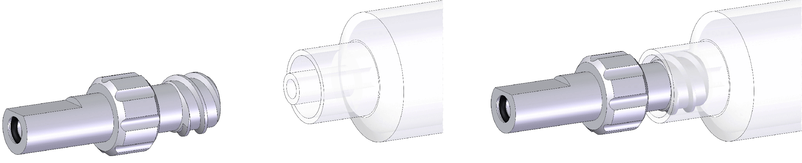
Step 5: Installing the adapter head onto the syringe¶
The adapter can be fastened onto the syringe. During insertion, the locking springs have to be moved by 90° to the syringe. Once the adapter head is in the syringe, the adapter is immobilized by being moved by 90° to the syringe.
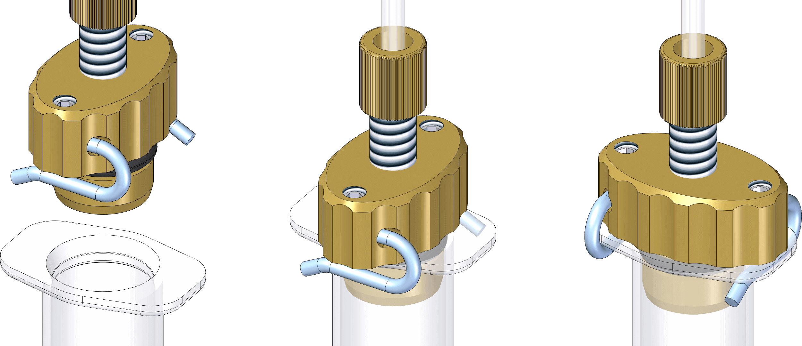
Caution: Leakage due to incorrect installation

The tightness is only ensured when the adapter head is turned 90 degrees.
Note: Fluid spillage during refilling

You may start with the replacement of the dispensing fluid using the dispensing head and the micro valve only once the installation is complete. Otherwise, the inlet adapter may leak.
Installing the Bottle/Syringe Kit on the Dispensing Head¶
Note
The micro valves should be screwed onto the dispensing head before the inlet adapter can be installed. See Installation of the micro valves.
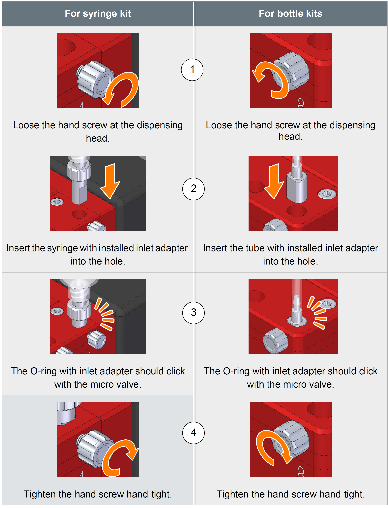
Refilling the Fluid Container¶
The following items have to be completed before the container can be filled up with fluid:
- The micro valve is installed on the dispensing head (in the right channel).
- The inlet adapter is connected to the syringe or the fluid tube.
- The inlet adapter is installed on the dispensing head.
- The screws on the dispensing head are tightened hand-tight.
- There are no open fluid holes in the bottle cap. (Otherwise, please fill them with plugs)
Note: Regularly check the filling level
CERTUS RIVO cannot control the actual filling level of the container. Therefore, it is necessary to regularly check the filling level of the fluid container. The fluid container has always to be filled with fluid so as to prevent dry dispensing. (Dry dispensing reduces the life of the micro valve.)
► Before performing an experiment or in case of a large dispensing volume (e.g., during IPL), please check if there is enough fluid in the container.
Refilling bottle kits¶
- Unscrew the bottle cap.
- Slowly refill the bottles with fluid.
- Screw the bottle cap onto the bottle and tighten it until the stop.
Refilling syringe kits¶
- Turn the adapter head 90 degrees and remove it.
- Slowly refill the syringe with fluid. (Check it first for possible leakage.)
- Carefully insert the adapter head into the syringe and turn it 90 degrees.
Caution: Leakage due to incorrect installation

The tightness is only ensured when the adapter head is turned 90 degrees.
Note: Fluid spillage during syringe refilling

The syringe may be refilled with fluid only when the syringe with inlet adapter and assembled micro valve is installed on the dispensing head. Otherwise, the fluid leaks from the inlet adapter.
► Before refilling, please make sure that the micro valve is screwed onto the dispensing head.